Şehrim
Anadolu Medeniyetler Müzesi
Anadolu Medeniyetleri Müzesi, Ankara'nın Altındağ ilçesinin Ulus semtinde bulunan tarih ve arkeoloji müzesidir. Müzede, Anadolu'nun
arkeolojik eserleri kronolojik olarak sergilenmektedir.
Müze, Ankara Kalesi’nin dış duvarının güneydoğu kıyısında, yeni işlev verilerek
düzenlenmiş iki Osmanlı yapısında yer alır. Bu yapılardan biri Veli Mahmud Paşa tarafından yaptırılan Mahmut Paşa Bedesteni diğeri ise
Rum Mehmet Paşa tarafından yaptırılan Kurşunlu Han’dır.
İçerdiği Eserler
Başlangıçta sadece Hitit dönemine ait eserlerin sergilendiği müze, daha sonra diğer uygarlıklara ait eserlerle zenginleşmiş ve Hitit
Müzesi olmaktan çıkıp, Anadolu Medeniyetleri Müzesi haline gelmiştir. Bugün kendine özgü koleksiyonları ile dünyanın sayılı müzeleri
arasında yer alan bu müzede, Paleolitik Çağdan başlayarak günümüze kadar Anadolu arkeolojisi sergilenmektedir.
Avrupa Konseyi’ne bağlı
Avrupa Müze Forumu (European Museum Forum) tarafından verilmekte olan Avrupa Yılın Müzesi Ödülü’nü 19 Nisan 1997 tarihinde İsviçre’nin
Lozan kentinde 68 müze arasından birinci seçilerek almıştır. Türkiye’de bu ödülü kazanan ilk müzedir.
Müzede yer alan ve MÖ 6200
yıllarına tarihlenen Çatalhöyük kent planını içeren harita, dünyanın bilinen en eski haritasıdır

Geyik Heykelciği, Erkek Hitit tanrı sembolü.
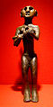
Horoztepe'de bir mezarda bulunan bebek emziren bronz çıplak kadın heykeli.
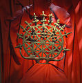
Hititli rahipler tarafından dinî törenlerde kullanılan ve evreni simgeleyen dinî standart.
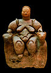
Güzel Venüs adlı Ana Tanrıça Kibele heykeli, Çatalhöyük, ön cepheden görünümü.
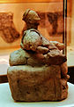
Ana Tanrıça Kibele, yan görünüm.
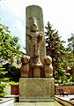
Hitit anıtı, Fasıllar’dan gelen anıtın tam bir kopyası.
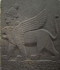
Chimera Hem İnsan hem de Aslan Başlı Kanatlı Aslan; Geç Hitit Dönemi.
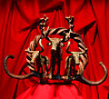
Hititlerin bronz merasim standardı.
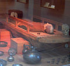
Kral Midas’ın mezarının yeniden inşa edilmiş hali.
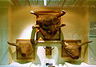
Çatalhöyük’te bulunan boğa kafaları.
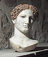
Romalı bir kadına ait mermer baş.

Çorum - Boğazköy’de bulunan M. Ö. 1235 yılından kalma Mısır kıraliçesinin Hitit kıralına yazdığı mektup
Resimler | |
|---|---|
| 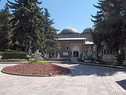 | |
Açılış | 1921 |
Tür | Tarih ve arkeoloji müzesi |
Koleksiyonlar | Anadolu'da yaşamış olan uygarlıkların eserleri |
Koleksiyon boyutu | 182.124 parça |
Binalar | |
Müzenin Giriş Kapısı. | 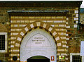 |
Kurşunlu Han (Mahmut Paşa Bedesteni), restorasyon öncesi hali. | 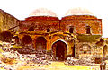 |
Müzenin Avlusu. | 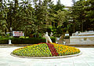 |